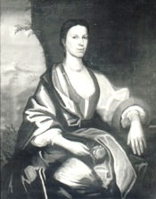

|
by Stefan Bielinski Engeltie Lansing was born in 1690, the fifth child of the marriage of Albany trader Jan Lansing and the widow Geertruy Van Schaick Coster. Their home on Pearl Street was filled with children from her mother's two families. In December 1710, the twenty-year-old Engeltie married Evert Wendell - a twenty-nine-year-old emerging businessman and attorney. The couple made their home in the Wendell house on upper State Street. Between 1711 and 1734, ten children were born to this mainline Albany family. Five of those children were still living in 1749 to further establish the Wendell family and its Lansing roots in Albany annals.
Engeltie Wendell managed the domestic side of one of the most successful early Albany families. However, when Evert Wendell made out his will in 1749, he detailed the division of his extensive estate among his children but scarcely mentioned his wife. Curiously, the only references to Engeltie came in enjoining his son Philip against selling certain property while "my wife is living" and in leaving all his negroes to his son Abraham "after my wife's decease." Also, he made his son Abraham and daughter Engeltie co-executors of the estate - perhaps pointing to some deficiency in his fifty-nine-year old wife's condition. Evert Wendell died in 1750. Afterwards, Engeltie was identified as a householder and sometimes referred to as an"Indian Trader," one of the enterprises of her late husband. She lived in their house with her children for the next two decades. Engeltie Lansing Wendell died on November 18, 1769 and was "buried beside her husband."
Black-and-white photo of a portrait of Engeltie Lansing attributed to Nehemiah Partridge and dated 1718. Original in the collection of the Albany Institute of History and Art. Engeltie was not named anywhere in Evert's will. Typically, a living wife would be named in the beginning sections of a will document. Lawyer Evert Wendell would not have overlooked Engeltie without reason. At this point, however, we have no clue as to why! |